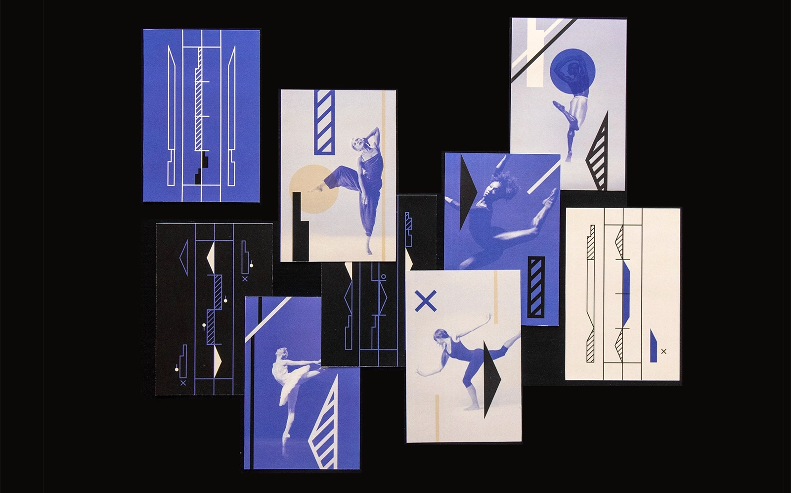
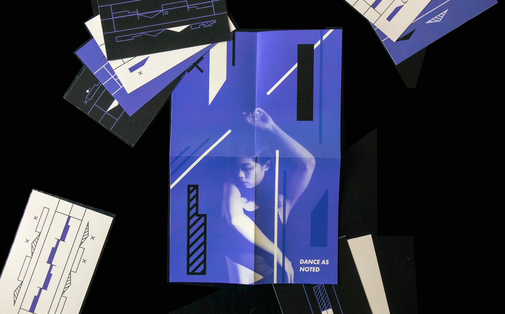

Dance as Noted is a set of educational cards inspired by Eames’ House of Cards. The cards have sequences of labanotation, a dance notion system designed by Rudolf von Laban on one side and images of dancers on the other. These cards are designed to be used as an educational tool to both inspire new dance choreography and teach a bit about the history of dance. The cards come with instructions on how to read labanotation and history of the notation system which also functions as a poster. They are wrapped in a silky bag resembling the material of pointe shoes.
Project Info
2021 / Card design
4 x 6 in
Project Info
2021 / Card design
4 x 6 in

